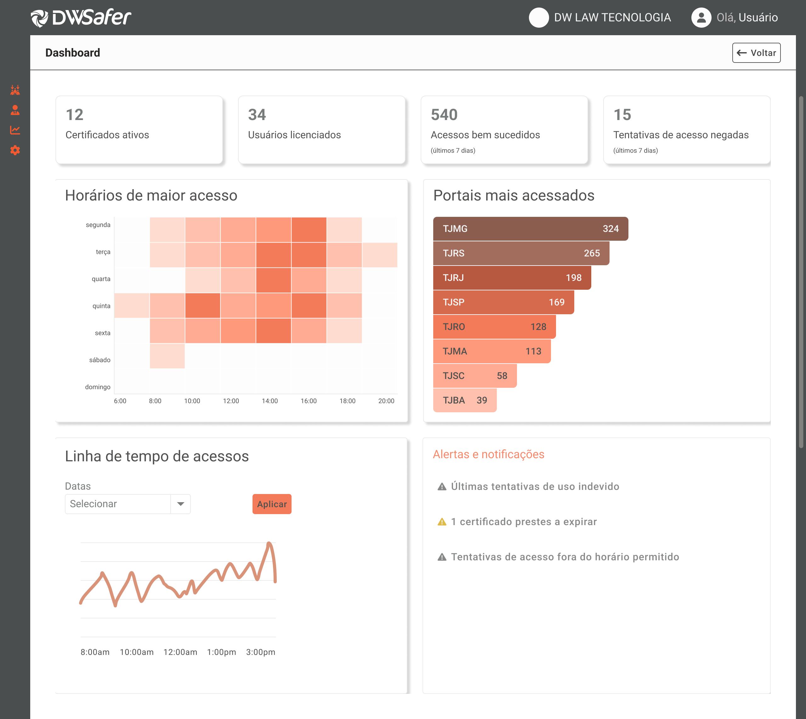

Plataforma B2B de gestão de identidade digital pro setor jurídico: escritórios acessam portais jurídicos (tribunais, PJe, e-SAJ) com rastreabilidade, governança e segurança. É a camada que guarda as credenciais de um escritório inteiro sem ninguém anotar senha em post-it.
Duas superfícies: plataforma de administração (web) e plugin de browser (onde o advogado acessa os portais). Mais uma versão White Label, revendida por parceiro externo.
Modelo mental (consolidado e protegido ao longo do trabalho):
Identidades → Portais → Usuários → Níveis de Acesso
Jargões herdados ("titular", "licenças") foram eliminados pra produto, comunicação e usuários falarem a mesma língua. Nomear certo é o que faz um usuário sem fluência técnica conseguir usar o produto.
Quando entrei, o desenvolvimento já estava no fim, o produto prestes a entrar em piloto, e a estrutura tinha sido definida por outras pessoas. A camada de experiência praticamente não existia.
Haviam usado um legado como referência, e esse legado tinha jogado a usabilidade no lixo. Pra você ter ideia, a jornada inteira tinha uma seta de "voltar" no canto superior direito. Fora decisões tomadas pela lógica de desenvolvimento, não pela de quem usa.

Então o trabalho foi resgatar um produto em movimento, o famoso pegar o bonde andando. Isso exige decidir o que reconstruir primeiro, o que aguenta esperar, e como trocar a fundação sem derrubar o que já está de pé.
Aqui eu tenho a oportunidade de trazer um pouco mais de caos que os meus cases no banco. Por quê? Lá existe uma maturidade grande de produto e UX; no Safer, não. Coisas que não são problema em times estruturados podem ser enormes em produtos que funcionam só com o time de desenvolvimento.
E como mitigar isso?
Discovery antes de execução. Briefing fraco não vira tela: vira pergunta. Quem usa? Em que contexto? O que já foi tentado? Nenhum Figma abre antes disso.
Decisão documentada, não só tomada. Toda decisão relevante num log com ID, contexto, racional e risco — protege o design de ser revertido na primeira pressão de prazo por quem não estava na sala. Handoff especifica comportamento condicional, concordância verbal, acessibilidade, contador dinâmico, campo condicional, microinteração — com protótipo HTML quando o comportamento é complexo demais pro wireframe estático.
Acessibilidade como critério de aceite. Aplicado no produto inteiro: cor sozinha nunca valida um status. Todo status vem com palavra ou elemento não-cromático além da cor. Você vai ver esse princípio nas três frentes.
Briefing fraco é uma decisão de design. Como você responde a um briefing incompleto diz tanto sobre senioridade quanto o que você entrega. A pergunta certa antes de abrir o Figma vale mais que dez telas na direção errada.
Stakeholder sem visibilidade do produto atual é risco de regressão. Referência trazida sem ver a versão já evoluída não é problema de ego, é de desfazer o que estava resolvido. "O que foi pedido vs. o que já estava pronto" protege o produto e alinha a pessoa.
Decisão não documentada vira bug de produto. Não de código: de produto. Quando ninguém sabe por que algo foi feito de um jeito, a primeira pressão de prazo desfaz. O log é a única coisa que segura o design contra quem não estava na sala.
Quando não há suporte humano, a interface é o suporte. A frente Massificada me ensinou na marra: no self-service, cada ponto de confusão é um usuário que vai embora. Linearidade vira infraestrutura de sobrevivência.
Ao longo dos meses, apliquei um sistema de inteligência de produto vivo pro Safer — o mesmo modelo que documento em profundidade no case próprio. Foi onde os 17 gaps, as 8 decisões e as 9 regras de negócio foram levantados na unha, com ID, status e rastreabilidade.
O que importa pro Safer é o que ele prova: a estrutura que nasceu num produto (prospecção bancária) se aplicou a um produto completamente diferente (identidade digital jurídica) sem adaptação estrutural. Teste de que é replicável, não específico.
→ Sistema de Inteligência de Produto (abre o case próprio)
Produto vivo tem sempre uma lista em aberto:
Saio do projeto agora, em agosto de 2026, deixando essa lista registrada e rastreável. Que é, no fundo, a coisa mais importante que esse trabalho inteiro defende: o próximo que chegar não vai começar no escuro.
A plataforma de administração é onde o escritório configura tudo: identidades, portais, permissões, bloqueios.
O problema: usar plenamente uma identidade exigia navegar por telas separadas pra criar, vincular portais, configurar MFA e adicionar usuários. Cada etapa isolada, sem feedback de completude. Resultado: muitas identidades criadas e inutilizáveis, por falta de portal ou usuário vinculado.
A decisão: queríamos reduzir a taxa de abandono e os chamados de suporte, acelerando o cadastro das credenciais. Unificamos num wizard de 5 etapas (Identidade → Portais → MFA → Usuário → Visualização), todas opcionais mas em sequência pra guiar o setup completo. A tela de sucesso oferece pontes ("Ir para portais" / "Ir para usuários" / "Finalizar"). E o fluxo varia conforme a origem: quem chega pelo wizard tem as etapas em sequência; quem chega por cadastro paralelo encontra o mesmo componente adaptado ao contexto.
O processo: criamos o wizard reaproveitando as telas iniciais e, à medida que ganhávamos abertura, replicávamos melhorias (cards, filtros) a cada oportunidade. Reconstrução em movimento, não big bang.
Notificação ativa: a dashboard informa qual etapa de uma identidade ainda precisa ser resolvida. Daí saiu proposta de notificação proativa por e-mail, registrada pra quando existir um sistema de notificações pra plataforma toda.
Feature que configura restrição de acesso a portais por grupo de usuários. Dois caminhos de entrada com contextos diferentes: pela Central (que não sabe qual grupo) e pelo módulo de Grupo de Acesso (que já sabe).
A arquitetura: dois wizards compartilhando os mesmos componentes. 3 steps pela Central, 2 steps pelo Grupo (primeiro passo suprimido, grupo pré-selecionado do contexto de origem). Mesmo componente, jornada adaptada à origem.
O card de grupo ganhou farol progressivo com contador dinâmico que atualiza inline a cada bloqueio salvo, sem recarregar — cor reforçada por palavra, nunca cor sozinha. E "Remover do bloqueio", não "Excluir": "Excluir" sugeriria apagar o grupo do sistema inteiro. Quando a ação faz uma coisa e a palavra sugere outra, o copy cede pro significado. Uma palavra errada aqui é um chamado de suporte na certa.
O briefing era um card no Azure com uma frase: "criar uma página que centralize atualizações de features e versões." Sem público, escopo, cadência ou fonte de dado.
Antes do Figma, as perguntas: quem lê (cliente externo, Enterprise e White Label, não dashboard interno), qual o vocabulário (cliente não fala "Gap", "RN-01"), qual a cadência (por release), qual a fonte (o time publica manualmente). Só então virou spec: página pública com filtros e cards expansíveis, e formulário admin com 11 blocos de conteúdo, cada um com regra de obrigatoriedade e comportamento condicional. O bloco de mídia tem alt text obrigatório como blocker de publicação — acessibilidade travando o publish, não como sugestão.
Uma escolha que aparece em várias telas e que eu documentaria de novo em qualquer projeto: ação que não se aplica a um estado histórico ou irreversível fica oculta, não desabilitada. Botão desabilitado cria a falsa expectativa de que dava pra fazer aquilo "se…" — e some com essa promessa que nunca ia se cumprir. Aplicado em cards de auditoria e estados somente-leitura, reduz carga cognitiva e falsa expectativa de uma vez.
O plugin é onde o advogado efetivamente acessa os portais e assina documentos. Parece a frente mais simples (entre muitas aspas), mas tem a mecânica de assinatura e a interação dessa jornada com a plataforma.
O trabalho no Plugin nasceu de um pedido do stakeholder: prints de um exercício com várias solicitações e um "queremos um layout mais clean". Duas armadilhas: parte do que ele pedia já tinha sido resolvida numa versão que ele não tinha visto, e "clean" é desejo, não spec.
Antes de desenhar, o trabalho de triagem: unifiquei o que ele pedia com o que já existia, avaliei item a item se o pedido resolvia a dor que ele trouxe, e traduzi "clean" em decisão concreta — reduzir a informação consumida por vez. Na prática, virou uma revisão heurística das telas. O handoff incluiu changelog de "o que foi solicitado vs. o que já estava resolvido", que protege de regressão e alinha o stakeholder.
Revelação progressiva com validação de dependência (Certificado → Portal). A referência usava um alert ("Selecione um portal…") redundante se a interface guiar por eliminação. Então o campo Portal só aparece após o Certificado, com título explicativo ("Primeiro, escolha o certificado que você vai usar") no lugar do alert. A lista de portais é filtrada por certificado + usuário. Ao trocar de certificado: mantém o portal se ainda for válido, reseta se não for. Evita o erro silencioso.
Auto-skip inteligente. Com só 1 certificado disponível, o sistema pré-seleciona, mas mantém o farol de status visível como reforço. Não faz clicar no óbvio, nem esconde que aquilo foi resolvido.
Timeout de autenticação com escape. Se a autenticação travava, não havia como cancelar — o usuário ficava preso. Adicionamos o cancelar. A diferença entre um beco sem saída e uma saída.
Mascaramento LGPD contextual. O certificado é mascarado sempre. Já o e-mail não é mascarado enquanto está em edição: a pessoa precisa ler o que digitou pra corrigir. Mascarar é pro estado pós-confirmação (ou pro dado que nunca deve ser exposto, como o certificado), não durante a edição de um campo que o dono precisa conferir.
Acessibilidade no detalhe. O ícone de fixar portal ganhou aria-label dinâmico no botão (não alt, que não funciona em SVG inline): "Fixar portal nos favoritos" / "Remover portal dos favoritos".
Propus uma splash screen com proposta de valor antes do login. A lógica: a referência do stakeholder não tinha nada de clean, mas ele queria clean. A splash resolvia a tensão — dava o "tchan", o efeito visual que faz o design parecer pensado, sem empurrar esse charme pra tela principal e poluí-la. Separar o lugar do encanto do lugar do trabalho.
Foi descartada — o time achou que poderia impactar demais o tempo de carregamento. O tipo de trade-off entre encanto e performance que produto real impõe, e faz parte registrar as decisões que não vingaram tanto quanto as que vingaram.
Esta é a frente mais estratégica, e a que mostra design a serviço direto do modelo de negócio.
O DW Safer nasceu pensado pra Enterprise: grande escritório, com admin dedicado, com acesso fácil ao time comercial e ao suporte. A frente Massificada foi transformar isso num produto pra quem está no outro extremo: o advogado solo, o escritório pequeno, que faz todos os papéis sozinho e não tem ninguém pra ligar quando trava.
Na construção do Massificado, criamos um produto novo em cima do produto: uma entrada nova, um fluxo de onboarding do zero, e uma camada que o Enterprise nem tem — planos, central de cobrança, cadastro de Pix, boleto, cartão de crédito. Porque o modelo é self-service, com trial gratuito.
E aqui está o raciocínio que orientou tudo. No Enterprise, se o cadastro fosse confuso ou não-linear, tudo bem: a pessoa liga pro comercial ou pro suporte e resolve. No Massificado esse colchão não existe. Se o advogado trava no cadastro das identidades digitais durante o trial de 15 dias, ele simplesmente não usa a plataforma. O trial expira, e ele vai embora sem nunca ter tocado no valor do produto.
Por isso tudo virou um processo linear: o cadastro da conta e o cadastro da identidade digital, ambos desenhados pra pessoa não abandonar no meio e sair com a conta 100% funcional. Os dois bebem da mesma fonte do wizard de identidade da Plataforma — o mesmo princípio de "não quebrar a cabeça no passo a passo", aplicado em dois momentos do produto.
O critério que orientou cada decisão foi a linearidade a serviço de uma métrica. Num modelo self-service sem suporte humano, a interface é o suporte, e reduzir abandono deixa de ser desejável e vira condição de sobrevivência do produto.
Sendo honesta: como a plataforma do Massificado ainda está nascendo, essa métrica (taxa de abandono) não foi medida. Mas é uma das mais importantes sugeridas pro Safer, e um dos próximos passos registrados no sistema de inteligência — mapeada como uma das "perguntas que hoje não conseguimos responder".